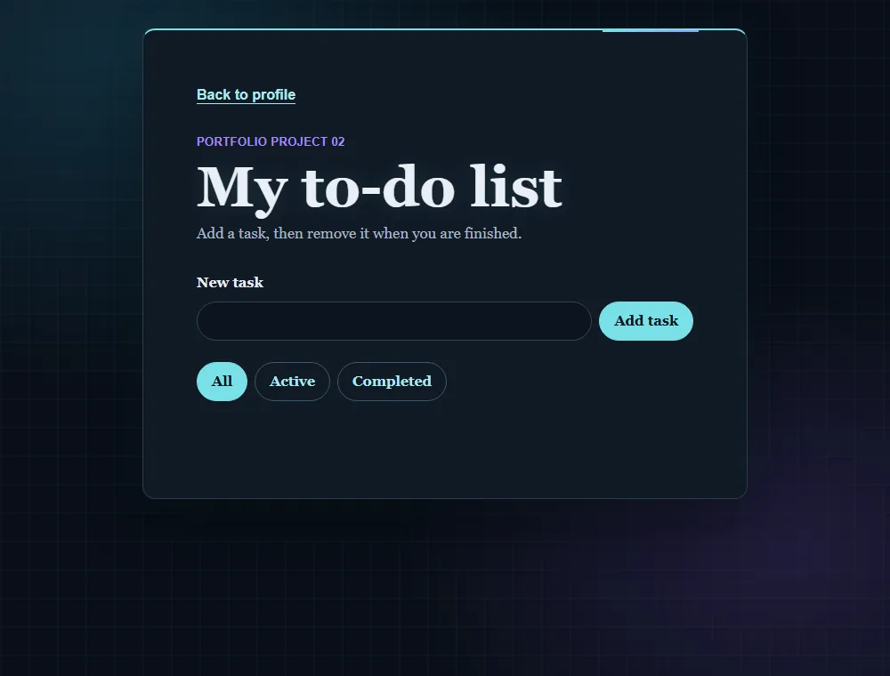
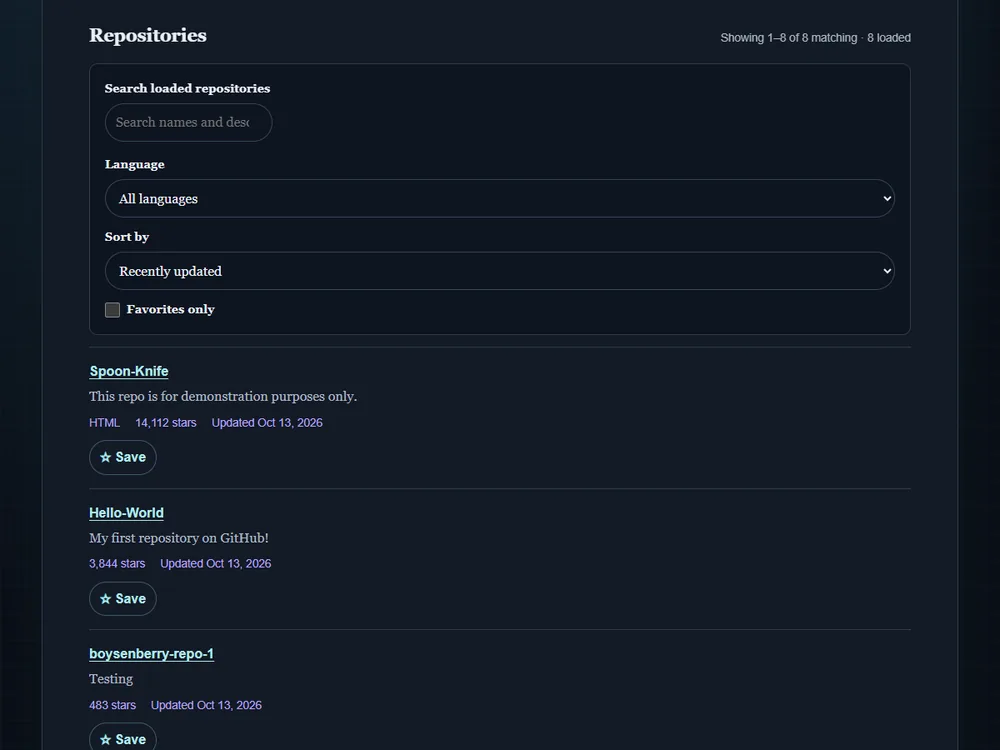
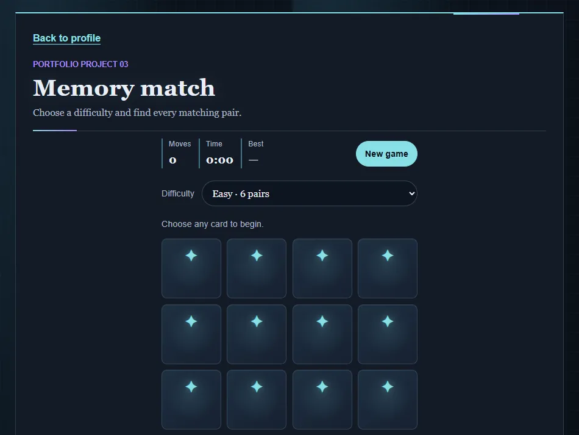
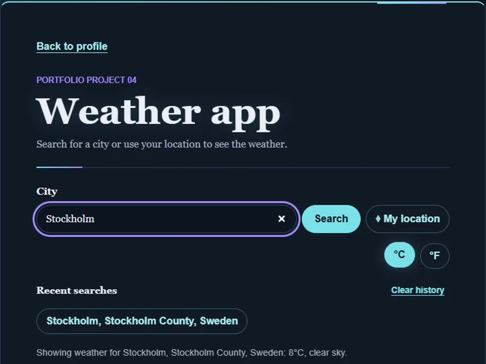
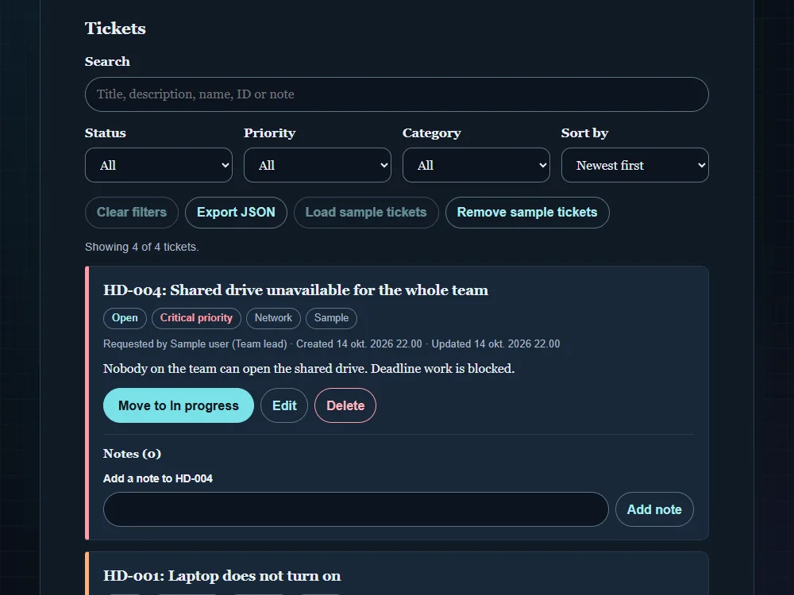
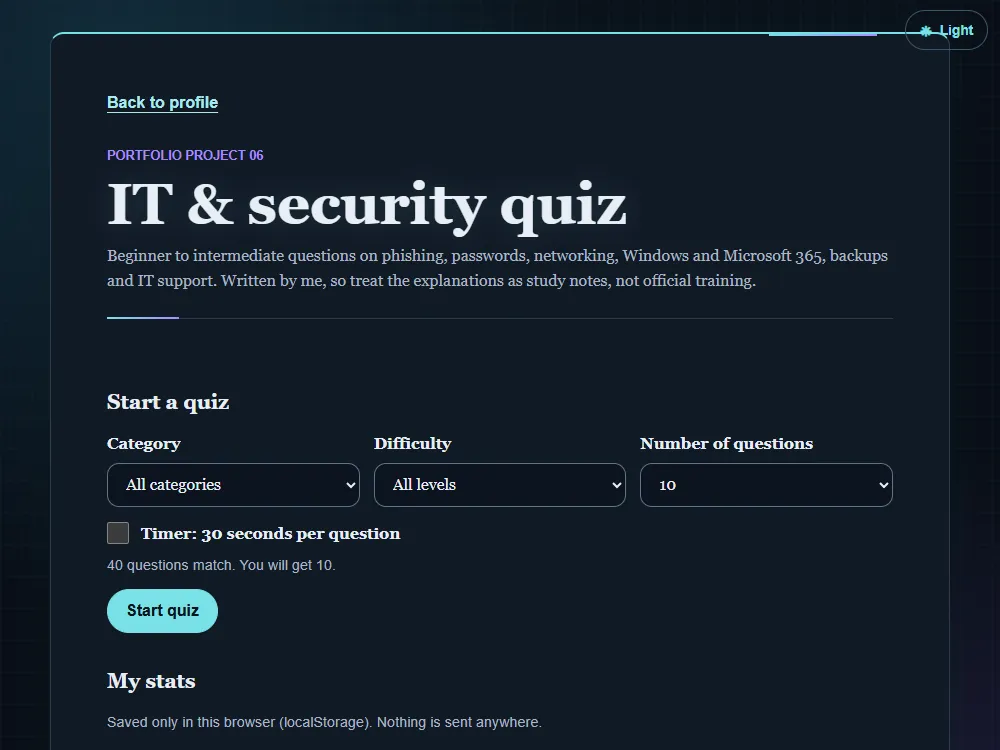
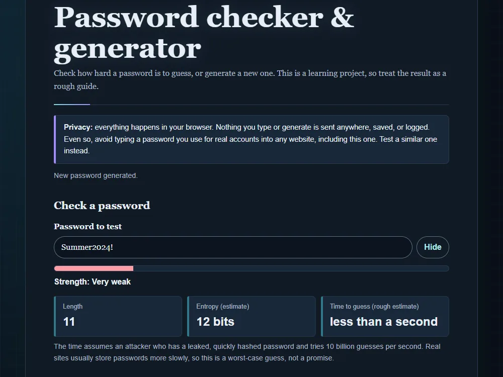
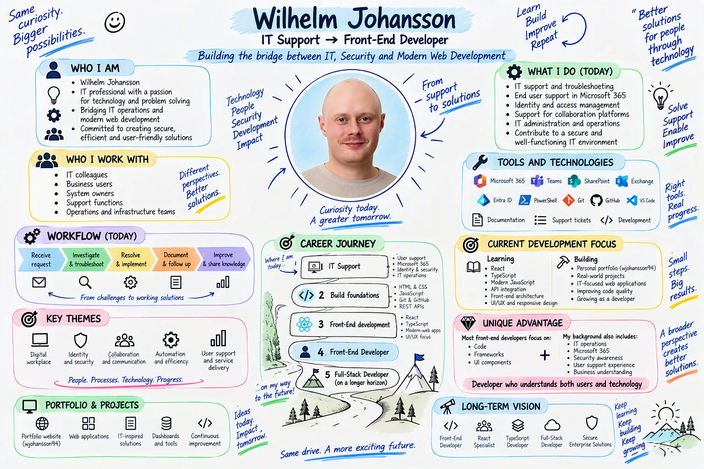

My projects

JavaScript to-do list
A task manager for adding, editing, completing, filtering, and
saving tasks in the browser.
- HTML
- CSS
- JavaScript
- localStorage
What I learned: saving data as JSON in
localStorage and rebuilding the list from it, including
converting older saved tasks to the newer format. Also
combining a filter, search and sort at the same time.
Challenge: edit and delete have to act on the
right task even when the visible list is filtered or sorted, so
each task keeps track of its original position.

GitHub repository explorer
Explore GitHub profiles and search, filter, sort, page through,
and save favorite repositories.
- HTML
- CSS
- JavaScript
- GitHub REST API
What I learned: fetching data from a public
REST API with async/await, showing loading, not-found and
rate-limit messages, and paging through results.
Challenge: slow or repeated searches. Requests
time out after 15 seconds and an older response is ignored when
a newer search has started.

Memory match
A themed card-matching game with three difficulty levels, a move
counter, timer, and personal best scores.
- HTML
- CSS
- JavaScript
- localStorage
What I learned: keeping game state in
variables, using timers (setInterval and setTimeout), shuffling
the cards, and saving a best score per difficulty.
Challenge: resetting everything cleanly. Timers
must be cleared on restart, and the board is locked briefly
after a mismatch so a third card can't be flipped.

Weather app
Search for a city or use your location to see current weather and
a 7-day forecast, with °C/°F switching and recent searches.
- HTML
- CSS
- JavaScript
- Open-Meteo API
- Geolocation API
- localStorage
What I learned: chaining two API calls
(geocoding first, then the forecast), turning weather codes into
readable text, and announcing results to screen readers with
aria-live.
Challenge: handling every state: loading,
no match for a city, network errors, and denied location
permission.

Helpdesk tickets
A small ticket tracker inspired by IT support work: create
tickets, move them through Open, In progress, Resolved and
Closed, add notes, search, filter and export to JSON.
- HTML
- CSS
- JavaScript
- localStorage
What I learned: structuring data as objects
in an array, checking saved data before trusting it, building
the page with createElement and textContent instead of
innerHTML, and moving keyboard focus after changes.
Challenge: keeping the list, counters and
filters in sync after every change, and making sure ticket
numbers like HD-001 are never reused after a delete.

IT & security quiz
A quiz with 40 questions I wrote on phishing, passwords,
networking, Windows and Microsoft 365, backups and IT support.
Pick a category and length, get instant explanations and track
your best score.
- HTML
- CSS
- JavaScript
- localStorage
What I learned: storing questions as an array
of objects, shuffling with the Fisher-Yates method, filtering
by category and level, and saving stats in localStorage after
checking that the saved data has the right shape.
Challenge: making the quiz work with a
keyboard and screen reader, using radio buttons, moving focus
to the feedback, and not relying on colour alone to show right
and wrong answers.

Password checker & generator
Checks how guessable a password is (length, character types,
common passwords, repeats, sequences and keyboard patterns) and
generates random passwords or passphrases. Nothing leaves the
browser.
- HTML
- CSS
- JavaScript
- Web Crypto API
What I learned: why generators should use
crypto.getRandomValues instead of Math.random, how entropy
(length times the size of the character pool) gives a rough
strength estimate, and how to copy to the clipboard with a
fallback.
Challenge: picking random characters fairly
(a plain modulo favours some values, so I used rejection
sampling) and writing pattern checks that do not count the
same characters twice. The strength result is only an estimate.
About me & my IT background
I'm an IT Support Specialist who enjoys solving technical problems
and supporting people. Outside work, I build front-end projects to
grow my skills in HTML, CSS, JavaScript, responsive design, and
accessibility. I use GitHub Copilot as an assistant, while
reviewing and understanding the code I build.
What I do today
- IT support and troubleshooting
- End user support in Microsoft 365
- Identity and access management
- Support for collaboration platforms
- IT administration and operations
I work with colleagues, business users, system owners, support
functions and operations and infrastructure teams.
My advantage
Most front-end developers focus on code, frameworks and UI
components. My background also includes:
- IT operations
- Microsoft 365
- Security awareness
- User support experience
- Business understanding
The goal: a developer who understands both users and
technology.
How I work in IT support
- Receive request
- Investigate & troubleshoot
- Resolve & implement
- Document & follow up
- Improve & share knowledge
My Helpdesk tickets project borrows from this flow: tickets, a
status workflow and notes.
At a glance: my career infographic

The same content as text is on this page. Select the image to
open it full size.